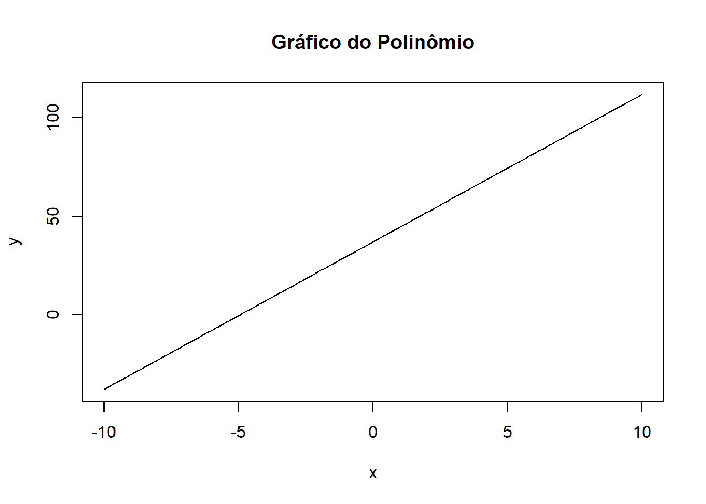
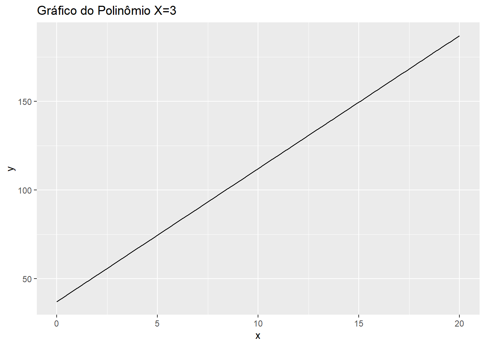
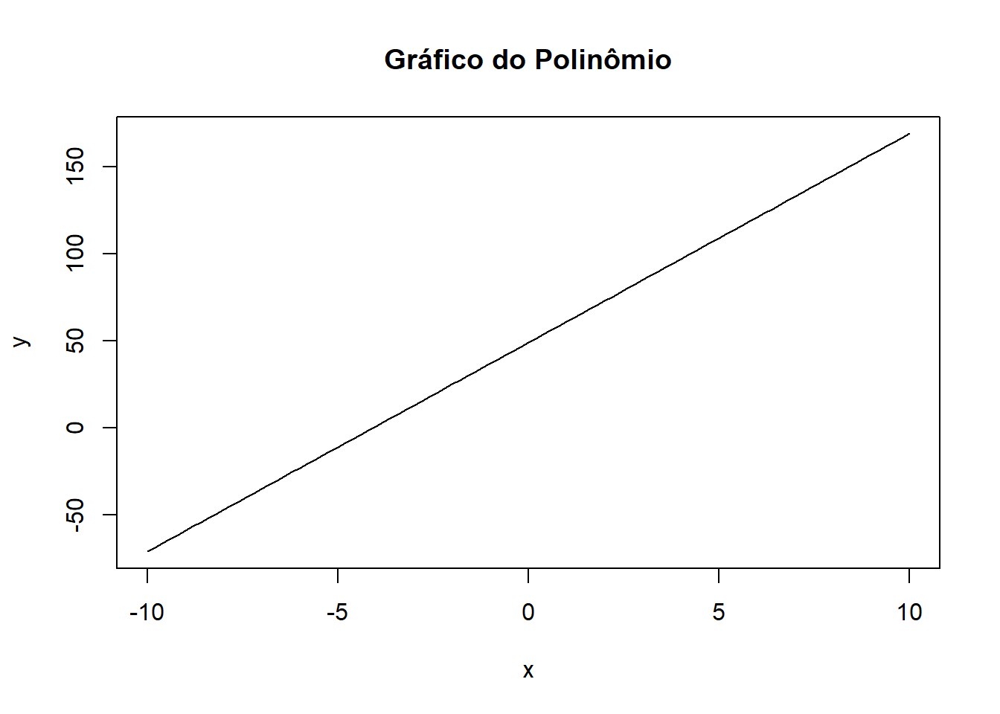
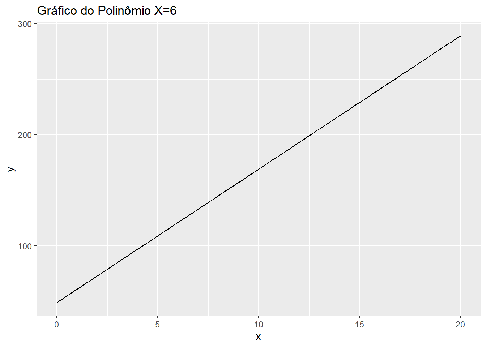

pacman::p_load(tidyverse, readxl, ggcorrplot,GGally)#1)#X2 = 3# Definir a função do polinômiopolinomio <-function(x1,x2) {return(25+3*x1 +4*x2 +1.5*x1*x2)}# Plotar o gráfico do polinômiocurve(polinomio(x1 =x ,x2 =3), from =-10, to =10, xlab ="x", ylab ="y", main ="Gráfico do Polinômio")

# Fazendo pelo ggplot# Criar um data frame com os valores de xx <-seq(0, 20, length.out =100)df <-data.frame(x = x)# Calcular os valores de y usando a função do polinômiodf$y <-polinomio(x1 = df$x, x2 =3)# Plotar o gráfico usando ggplot2ggplot(df, aes(x = x, y = y)) +geom_line() +labs(x ="x", y ="y", title ="Gráfico do Polinômio X=3")

#X2 = 6# Definir a função do polinômiopolinomio <-function(x1,x2) {return(25+3*x1 +4*x2 +1.5*x1*x2)}# Plotar o gráfico do polinômiocurve(polinomio(x1 =x ,x2 =6), from =-10, to =10, xlab ="x", ylab ="y", main ="Gráfico do Polinômio")

# Criar um data frame com os valores de xx <-seq(0, 20, length.out =100)df <-data.frame(x = x)# Calcular os valores de y usando a função do polinômiodf$y <-polinomio(x1 = df$x, x2 =6)# Plotar o gráfico usando ggplot2ggplot(df, aes(x = x, y = y)) +geom_line() +labs(x ="x", y ="y", title ="Gráfico do Polinômio X=6")

#O modelo é aditivo podemos perceber que a escala ela dobra quando dobramos o X indicando que o valores sao maiores#2)#3)
#4) dados <- read_excel(“dados/Dados_ex_6_5.xlsx”, col_types = c(“numeric”, “numeric”, “numeric”))
#a)
Calcular a matriz de correlação
matriz_cor <- cor(dados)
Converter a matriz de correlação em um data frame
df_cor <- as.data.frame(matriz_cor)
Criar o gráfico de correlação (corr plot)
ggcorrplot(df_cor,lab = TRUE)
#matriz grafico de dispersao
ggpairs(dados) #podemos perceber que a variavel X2 é categorica (2,4)
#a) testar se existe regressao - ## h0: B1 = B2 (ausencia de regressao) ## h1? Existe um Bj != 0 (existe reg) ## est F ## o que implica sobre b1 e b2, se nao rejeitar, variaveis na ajudam a explicar o comp de y ## se rejeitar, alguma ajuda a explicar. ai testa individualmente ## h0) Bj = 0 ## h1) Bj != 0 ## est T